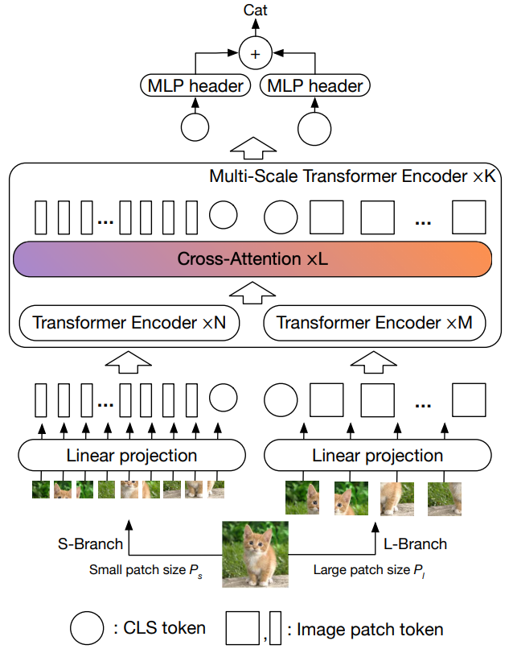

MobileViTv3: Mobile-Friendly Vision Transformer with Simple and Effective Fusion of Local, Global and Input Features
Contents
MobileViTv3: Mobile-Friendly Vision Transformer with Simple and Effective Fusion of Local, Global and Input Features#
ABSTRACT#
mobile vision task를 위한 경량화 모델
MobileViT = CNNs + ViT
MobileViTv1 모델은 경쟁력 있는 성능을 달성했지만, 여전히 스케일링 문제와 학습과정이 복잡하다는 문제가 존재
이를 해결하기 위해 간단하고 효과적인 CNNs + ViT 블록인 MobileViTv3을 제안
mageNet-1k, ADE20K, COCO, PascalVOC2012 모든 데이터셋에서 v1을 능가
MobileViTv2의 아키텍처를 차용하여 0.5, 0.75, 1.0 모델을 만들었고 성능 또한 개선됨을 확인
1. INTRODUCTION#
ResNet(2016), DenseNet(2017), EfficientNet(2019) 등의 CNN 기반 모델들이 ImageNet, COCO, PascalVOC, ADE20K와 같은 벤치마크 데이터셋을 통해 강력한 성능을 자랑하며 분류, 탐지, 분할 등의 여러 태스크에 널리 사용됨
일반적으로 리소스 제약이 있는 휴대폰과 같은 엣지 환경에서 CNN을 배포할 땐, MobileNet(MobileNetv1, MobileNetv2, MobileNetv3)(2019), ShuffleNet(ShuffleNetv1, ShuffleNetv2)(2018), EfficientNet의 경량버전(EfficientNet-B0, EfficientNet-B1)(2019)을 사용
하지만, 이러한 경량 버전은 성능 하락으로 이어짐
최근 ViT가 등장하였으나 인접 정보가 임베딩된 특징 맵을 형성하는 CNN과는 달리 이미지의 모든 공간을 임베딩하는 특징 맵을 형성하기 때문에 비슷한 성능을 달성하기 위해선 대규모 사전 훈련과 데이터 증강이 필요
ViT(2020), DeiT(2021), SwinT(2021), MViT(2021), Focal-ViT(2021), PVT(2021), T2T-ViT(2021), XCiT(2021)
Early convolutions help transformers see better(Xiao et al., 2021) 연구에서는 ViT의 강건성이 낮아 optimizer, LR, weight decay에 민감하고 수렴이 느린 점을 지적
결국엔 ViT에 convolution layer를 넣는 방향으로 연구가 이어짐
파라미터와 FLOPs 측면에서 모델을 효율적으로 만들기 위해 도입
MobileViTv1(2021), MobileViTv2(2022), CMT(2022), CvT(2021), PVTv2(2022), ResT(2021), MobileFormer(2022), CPVT(2021), MiniViT(2022), CoAtNet(2021), CoaT(2021)
ImageNet-1K에 대한 성능 도표
Performance of many of models on ImageNet-1K
이 중 MobileViT와 MobileFormer만이 모바일 디바이스 환경에 맞게끔 리소스를 제한하여 디자인했고, 적은 파라미터와 FLOPs로 다른 모델에 견줄 만한 성능 달성
따라서 MobileViT를 개선하고자 함
파라미터 수와 FLOPs를 비슷하게 하면서 모델 아키텍쳐를 개선할 수 있는가에 대한 의문 제기
local(CNN)과 global(ViT) 특징 모두를 융합하여 Imagenet-1K, ADE20k, PascalVOC and COCO 데이터셋의 성능을 향상시키는 간단하고 효과적인 방법 제안
fusion block에서 33 conv layer를 11 conv layer로 변경
fusion block에서 global representation block을 input과 concat 하는 것 대신 local과 global feature representation block을 concat
전체 output을 내기 직전에 최종 단계로 input을 fusion block 결과에 더함
local representation block에서 conv 33 대신 depthwise conv 33 layer로 변경
MobileViTv3-S, MobileViTv3-XS, MobileViTv3-XXS
MobileViTv3-1.0, MobileViTv3-0.75, MobileViTv3-0.5
2. RELATED WORK#
Vision Transformers#
성능을 강화하기 위해 self-attention mechanism에 집중한 연구들
XCiT(2021), SwinT(2021), ViL(2021), Focal-transformer(2021)
각 layer 결과의 token size나 spatial resolution을 줄임으로서 hierarchical feature를 학습하는 CNN의 장점을 적용
T2T-ViT(2021), PVT(PVTv1, 2021)
local feature (이웃한 pixels/features/patches로부터 배우는)와 global feature (모든 pixels/features/patches로부터 배우는) 두 가지 모두 학습
CrossViT(2021), MViT(2021), MViTv2(2022), Focal-transformer(2021)
DeiT(2021) - 대규모 사전 훈련에 대한 의존도를 줄여 성능 향상
XCiT(2021)
token 대신 feature channel에서 key와 query 간 공분산 행렬을 기반으로 self-attention 연산이 이루어지는 cross-covariance attention(XCA) 제안
성능 향상을 위해 self-attention mechanism 개선에 초점

SwinT(2021)
downstream task에 사용할 수 있도록 수정된 범용 아키텍쳐
서로 다른 입력 스케일에 맞게 조정하고 입력 이미지 크기와 선형 계산 복잡성 관계를 가질 수 있도록 하여 효율적으로 작동하도록 해주는 shifted-window based self-attention 제안
성능 향상을 위해 self-attention mechanism 개선에 초점
ViL(2021)
이미지를 다중 스케일로 인코딩하도록 4개의 E-ViT 모듈로 쌓아 downstream task를 수행할 수 있도록 함
E-ViT는 patch embedding에 LayerNorm을 추가하고 global token을 정의함으로써 클래스를 지정하고 a를 추가하여 transformer 연산을 수정
성능 향상을 위해 self-attention mechanism 개선에 초점
T2T-ViT(2021)
인접한 토큰을 겹쳐지게끔 다시 하나의 토큰으로 만들어줌으로써 local information을 학습시키고 토큰 길이가 줄어들게끔 설계
hierarchical feature를 학습
PVT(2021)
pyramid vision transformer로 feature map의 resolution 크기를 줄임으로써 계산 복잡도를 줄이고 성능을 향상시킴
hierarchical feature를 학습
Focal-transformer(2021)
self-attention 대신 focal-attention을 제안
각 토큰은 가장 가까운 주변 토큰들을 fine한 granularity로서 patch 크기를 줄여 좁은 공간을 attend 할 수 있도록 하고 먼 토큰들은 coarse한 granularity로서 patch 크기를 크게 해서 넓은 공간을 attend 할 수 있도록 함
local feature와 global feature 모두를 학습
성능 향상을 위해 self-attention mechanism 개선에 초점
CrossViT(2021)
small branch와 large branch로 나누고 각 patch 크기도 다르게 해서 따로 encoder를 통과시킨 뒤 cross-attention 레이어에서 크고 작은 patch 크기의 장단점을 서로 보완하게끔 설계
local feature와 global feature 모두를 학습

MViT(2021)
비디오 및 이미지 인식을 위해 설계
coarse feature를 담당하는 초기 계층부터 시작하여 complex한 고차원의 feature를 담당하는 깊은 계층까지 이어지는 feature pyramid 구조를 학습
local feature와 global feature 모두를 학습
MViTv2(2022)
positional embedding과 residual pooling connection을 도입하여 MViT를 개선
local feature와 global feature 모두를 학습
CNNs#
ConvNeXt(2022), RegNetY(2020), SqueezeNet(2016), Inception-v3(2016) …
여러 variants들을 통해 성능을 높였으나, 일반적으로 성능이 좋을수록 파라미터 수와 FLOPs가 높음
파라미터 수와 FLOPs를 줄이면서 성능을 유지
EfficientNet(2019), MobileNetV3(2019), ShuffleNetv2(2018), ESPNetv2(2019)
ResNet(2016)
layer 최적화를 도와 깊게 쌓을 수 있도록 해주는 residual connection
분류, 탐지, 분할 등의 downstream task 가능
DenseNet(2017)
feed-forward 방식으로 skip connection을 통해 모든 layer를 그 다음 layer에 연결
EfficentNet(2019)
모델 스케일링 연구를 통해 파라미터 수와 FLOPs 측면에서 매우 효율적인 CNN efficientnet 모델 개발
MobileNetV3(2019)
휴대폰과 같이 리소스가 제한적인 모바일 환경에서 사용 가능하도록 개발
MobileNetv2(2018) block + Squeeze-and-Excite network
ShuffleNetv2(2018)
ESPNetv2(2019)
depth-wise dilated separable convolution을 사용해 extremely efficient spatial pyramid(EESP) 생성
파라미터 수와 FLOPs를 줄이고 성능을 유지
Hybrids#
CNN과 ViT를 결합하여 local information과 long range dependency 모두를 학습
MobileViT(2021), MobileFormer(2022)
모바일 장치와 같은 제한된 환경을 위해 설계
MobileViTv1, MobileViTv2
파라미터 수가 6M 이하인 경우 가장 높은 성능
MobileFormer
MobileNetv3 + ViT
CMT(2022)
모든 transformer block 이전에 conv stem, conv layer를 가지며 conv layer와 transformer layer를 번갈아가면서 쌓음

CvT(2021)
ViT에서 사용되는 linear embedding 대신에 conv token embedding을 사용
conv token embedding을 통해 성능을 향상시키는 conv transformer layer block 사용
PVTv2(2022)
transformer에서 conv feed forward layer 사용
overlapping patch embedding 사용
linear complexity attention layer 사용
ResT(2021)
depth-wise conv self-attention과 token map에 stride가 있는 overlapping conv operation을 적용한 patch embedding 사용
CoAtNet(2021)
depth-wise conv와 간단한 relation attention을 사용하는 self-attention를 통합시킴
conv layer와 attention layer를 수직으로 쌓음
PiT’s(2021)
공간적 감소를 통한 성능 향상을 위해 depth-wise conv 사용
LVT(2022)
local self-attention이 conv kernel 내에서 도입되는 conv self-attention 소개
multi-scale context를 포괄하여 성능을 향상시키며 재귀적으로 작동하는 self-attention 소개
ViTAE(2021)
multi-head self-attention과 병렬로 conv layer를 가지고 있으며 둘 다 융합되어 feed-forward network로 이어짐
conv layer를 사용하여 토큰에 입력값을 임베딩
CeiT(2021)
성능 향상을 위해 depth-wise conv를 사용함으로써 지역적 정보 학습을 향상시키는 feed-forward 소개
RVT(2022)
patch embedding을 생성하는 conv stem을 사용
conv feed-forward network를 transformer 내에서 사용하며 성능 개선
3. New MobileViT architecture#
3.1 MobileViTv3 block#
fusion block에서 33 conv layer 대신 11 conv layer 사용
fusion block의 학습을 단순화시키기 위해 feature map 내의 다른 위치의 독립적인 local, global feature를 융합
3*3 conv layer는 입력 feature와 global feature를 융합하는 것
fusion block은 feature map의 위치와 상관없이 입력 및 global feature를 융합하는 것이므로 1*1 conv layer를 통해 단순화
FLOPs를 증가시키지 않고 모델을 확장하기 위해 1*1 conv layer를 사용
모델 XXS에서 S로 확장하기 위해서는 폭과 깊이를 다르게 변경해야 하는데 1*1 conv layer로 입출력 채널 수와 FLOPs가 증가하는 것을 막을 수 있음
local, global feature fusion
fusion block에서 input과 global representation feature를 concat 하는 것 대신 local과 global representation block의 feature를 concat
input보다는 local feature가 global feature과 관련이 더 높기 때문
local feature의 채널 수가 더 많긴 하지만 1*1 conv layer로 교체되면서 전체적인 파라미터 수는 적어짐
Fusing input features
input feature를 fusion block 결과에 residual connection 방식으로 더해줌
아키텍쳐가 깊어질 때 최적화시켜주는 역할
accuracy가 0.6% 정도 상승됨
Depthwise conv layer in local representation block
local representation block의 33 conv layer를 depthwise 33 conv layer로 교체
이는 파라미터 수를 줄여주며, Top-1 accuracy를 높이기보다는 파라미터 수와 accuracy 간의 trade-off를 완화해줌
3.2 Scaling up building blocks#
MobileViTv3에서 레이어의 채널 수를 늘려 확장
MobileViTv3-S, XS, XXS
괄호는 v1 모델과 비교한 스케일링 계수를 나타냄
v1-XXS보다 2%, v1-XS보다 1.9%, v1-S보다 0.9%의 정확도 향상
MobileViTv1 architecture
MobileViTv3 variant architectures
4. Experimental results#
4.1 Image Classification on Imagenet-1k#
4.1.1 Implementation details
배치 크기를 제외한 나머지 S, XS, XXS 모델의 하이퍼 파라미터는 MobileNetViTv1 과 유사 (batch size : 384)
1.0, 0.75, 0.5 는 MobileNetViTv2 와 유사 (batch size : 1020)
ImageNet 1k 처음부터 train
Width multiplier 사용 가능
4.1.2 Comparison with MobileViTs
batch size 를 192 에서 384 로 늘리면 성능이 향상됨
batch size 1024 의 v1 보다 192 인 v3 의 성능이 더 좋음
4.1.3 Comparison with ViTs
6M 이상일 경우 FLOPs를 2G FLOPs 이하로 제한하여 비교
2M 이하 : 대부분이 MobileViT 계열
2~4M : MobileViTv3-XS 및 MobileViTv3-0.75이 최고
4~8M : MobileViTv3-S 및 MobileViTv3-1.0이 최고
4.1.4 Comparison with CNNs
Accuracy graph for parameters including MibileViTv3
1~2M : MobileViTv3-0.5, MobileViTv3-XXS
2~4M : MobileNetv3-Large(0.75)와 비교하여 MobileViTv3-XS이 4% 이상 능가함
4~8M : EfficientNet-B0 등의 모델보다 MobileViTv3-S이 2% 이상 능가
파라미터 수를 구간별로 나눴을 때 , CNNs/ViTs 상관 없이 MobileViTv3 계열 모델들이 매우 뛰어난 성능을 보이고 있음
4.2 Segmentation#
4.2.1 Implementation details
PASCAL VOC 2012 dataset / ADE20K dataset
파라미터 수가 조금씩 늘어났으며 성능 또한 조금씩 상승함
4.2.2 Results
4.3 Object detection#
4.3.1 Implementation details
Single Shot Detection network(SSD MobileViTv3 backbone)
MS COCO dataset
4.3.2 Results

모든 면에서 성능 향상 / ResNet50보다 3배 이상 파라미터수가 더 적음
4.4 Improving Latency and Throughput#
Implementation details
GeForce RTX 2080ti
10000 iterations
100 batches
지연시간 줄이기 위해 layer4를 4에서 2로 줄임(blocks)
Results
정확도 1.98% 향상
Blocks를 줄이지 않아도 FLOPs와 지연 시간이 줄어들었으며 Blocks를 4에서 2로 줄였을 경우 감소폭이 더 커졌음
4.5 Ablation study of our proposed MobileViTv3 block#
4.5.1 Implementation details
MobileViTv3의 아키텍쳐에 적용된 4가지 변경사항을 각각 MobileViTv1에 적용하여 비
100 epochs
192 batches
나머지는 section 4.1.1과 동일
4.5.2 With 100 training epochs
fusion block에서 33 Conv를 11 Conv로 대체
fusion 계층이 local & global feautre가 다른 위치의 local & global feature와 융합되게끔 하는 태스크를 단순화시켜 성능을 향상
Input feature 대신 local feature를 concat
1*1 Conv와 함께 수행하면 1%의 성능 향상
Conv 1*1 + local feature concat에다가 Input feature를 fusion block의 output에 추가
1.6%의 성능 향상
residual connect의 장점 포함
위 변경사항에 Depth-wise Conv 추가
1.3%의 성능 향상했으나 위 변경사항보다는 0.3%정도 덜 상승
하지만 parameter 수와 FLOPs를 줄일 수 있음
4.5.3 With 300 training epochs
MobileViTv1-S은 batch size 192 / 300 epochs일 경우 최고성능 달성
하지만 1024 batch size인 경우보다 2.8% 더 낮음
MobileViTv3-S는 비교를 위해 스케일을 늘리고 192에서 384로밖에 늘리지 않았음에도 불구하고 v1-S보다 더 낮은 FLOPs, parameter 수를 기록하고 성능도 더 높게 나
5. Discussion and limitations#
accuracy와 throughput을 높이면서 메모리 (parameter), 계산량(FLOPs), 지연 시간 (latency)를 줄임
MobileViTv1과 v2 보다 더 높은 성능 달성 (동일 조건 하)
다른 CNN variants 보다 정확도가 높고 파라미터 수가 적거나 유사하지만 , 계산량이 많으므로 edge device 에서는 문제가 될 수 있음
ViT의 self attention mechanism 을 사용하므로 어쩔 수 없으므로 이를 최적화 하는 방향 모색 필요
Author by 정영상
Edit by 김주영